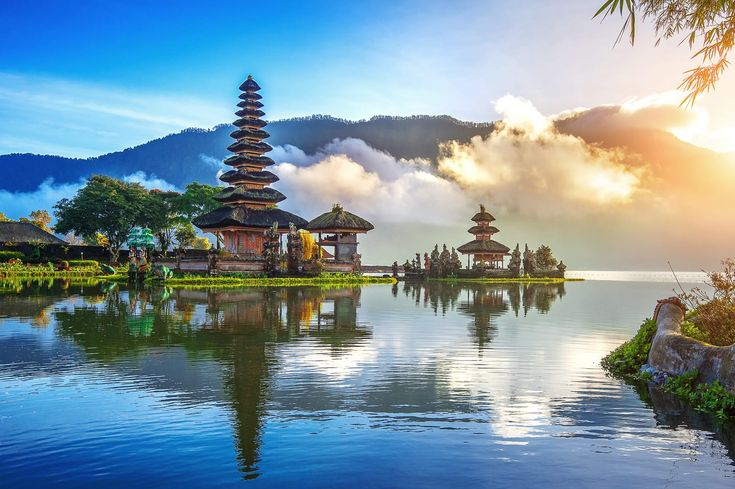

Haii semuaa! Atas Bapak Agustinus Sutanto, Bapak Kris, Ibu Yustin, dan Bapak Robi, terima kasih karena telah dan sudah ingin membuka website saya yang berisi "Kerja Sama Internasional Negara Indonesia dan Negara Jepang" dan juga SDGS Kesehatan. Website ini dibuat oleh Clarice Geodge dari kelas 93 absen 6 💗
Website saya ini berisikan tentang berbagai kerja sama yang negara Indonesia dan Jepang, telah laksanakan untuk mensejahterahkan dan mengembangkan bangsa yaitu kerjasama Bilateral, Multilateral, dan Regional. Serta juga penjelasan tentang SDGS dan saya memilih SDGS Kesehatan dan Kesejahteraan yang baik
Setiap negara akan membutuhkan negara lain dalam memenuhi kebutuhannya. Sejauh ini tidak banyak negara yang dapat bekerja serta membangun negaranya secara mandiri tanpa bantuan dari negara lain. Maka dari itu, setiap negara memiliki hubungan bahkan melakukan kerjasama dengan negara lain. Kerjasama ini disebut dengan kerjasama internasional yaitu kerjasama yang dilakukan antar dua negara atau lebih.
Tujuan Utama Kerjasama Internasional adalah meningkatkan Kesejahteraan Bersama dan saling menyalurkan kelebihan dan menutupi kekurangan. Tujuan ini dapat diterapkan dengan :
Semoga Website saya ini bisa memberi manfaat yang baik dan positif dan juga menyenangkan untuk dibaca!
Selamat membaca dan Tuhan memberkati! Terimakasih 🙏🏼